API: Node.js 22 ve Express 5 ile yazıldı, uygulama container'ında 8000 portunda çalışır ve yalnızca JSON döner.
Arayüz: HTML5, CSS3 ve düz JavaScript. Dosyalar frontend container'ında (Apache 2.4) durur, veriyi fetch ile alır. React gibi bir çerçeve kullanılmadı.
Yönlendirme: Apache -D WEBAPI ayarıyla çalışır; /api/ ile başlayan istekleri http://uygulama:8000/api/ adresine iletir. Tarayıcı veritabanına ya da Redis'e hiç bağlanmaz.
| Servis | İmaj | Görev |
|---|---|---|
frontend | Apache 2.4 | HTML/CSS/JS dosyaları, /api/ isteklerini uygulamaya iletir · localhost:8080 |
uygulama | node:22-alpine (kendi Dockerfile) | Express Web API: route → controller → veri katmanı |
mysql-primary | mysql:8.4 | Kaynak: tüm yazmalar ve stored procedure çağrıları · :3307 |
mysql-replica | mysql:8.4 | Replika: listeleme ve raporlar, super_read_only · :3308 |
replica-setup | mysql:8.4 | Replikasyonu bir kez kurar ve çıkar (Exited (0)) |
redis | redis:7.4-alpine | Menü önbelleği ve oturumlar · :6379 |
| Etiket | Commit | Tarih |
|---|---|---|
asama-1 | 779bd1a | 8 Kasım 2026 |
asama-2 | e76e8e3 | 11 Kasım 2026 |
asama-3 | e11fbf6 | 13 Kasım 2026 |
asama-4 | bb489a1 | 15 Kasım 2026 |
git clone https://github.com/bilalcanlion/yemekhane-otomasyonu cd yemekhane-otomasyonu docker compose up -d
Ek adım gerekmez: uygulama imajı compose ile kurulur, 04_degisiklik.sql ilk kurulumda kendiliğinden çalışır. Arayüz: http://localhost:8080. Örnek hesapların şifresi README'de yazılıdır.
Tüm komutlar Windows 11, PowerShell 5.1 ve Docker Desktop üzerinde proje kökünde çalıştırıldı. Çıktıların tam hâli depoda rapor/asama-1, rapor/asama-3 ve rapor/asama-4 klasörlerindedir. Bu raporda okunabilirlik için kısaltıldı. MySQL'in Using a password on the command line interface can be insecure. uyarısı çıktılardan çıkarıldı.
| # | Kontrol | Beklenen | Sonuç |
|---|---|---|---|
| 1 | Servis durumu | 4 servis healthy, replica-setup Exited (0) | Geçti |
| 2 | Replikasyon çalışıyor | Replica_IO_Running: Yes, Replica_SQL_Running: Yes | Geçti |
| 3 | Kaynakta yükleme replikada görünür | 355,00 → 455,00 | Geçti |
| 4 | Replikaya yazma reddedilir | ERROR 1290 ... --super-read-only | Geçti |
| 5 | Replika durdurulup açılınca aradaki değişikliği yakalar | 455,00 → 655,00 | Geçti |
| 6 | Redis | PONG | Geçti |
PS> docker compose ps -a NAME IMAGE SERVICE STATUS yemekhane-frontend-1 yemekhane-frontend frontend Up 19 minutes (healthy) yemekhane-mysql-primary-1 mysql:8.4 mysql-primary Up 19 minutes (healthy) yemekhane-mysql-replica-1 mysql:8.4 mysql-replica Up 19 minutes (healthy) yemekhane-redis-1 redis:7.4-alpine redis Up 19 minutes (healthy) yemekhane-replica-setup-1 mysql:8.4 replica-setup Exited (0) 18 minutes ago
replica-setup replikayı bir kez kurup çıkan yardımcı container'dır. Exited (0) işini başarıyla bitirdiğini gösterir. (Bu çıktı Aşama 1'de alındı; uygulama servisi Aşama 2'de eklendi.)
PS> docker compose exec mysql-replica mysql -uroot -pyemekhane_kok -e "SHOW REPLICA STATUS\G"
Replica_IO_State: Waiting for source to send event
Source_Host: mysql-primary
Replica_IO_Running: Yes
Replica_SQL_Running: Yes
Last_Errno: 0
Seconds_Behind_Source: 0
Executed_Gtid_Set: 64fbefa7-db55-11f1-892e-4653db60fbda:1-42
Auto_Position: 1
IO thread kaynaktan olayları alıyor, SQL thread onları uyguluyor. Gecikme yok. Auto_Position: 1, replikanın GTID ile konumlandığını gösterir.
PS> docker compose exec mysql-replica mysql -uyemekhane_app -pUyg_2026 yemekhane -e "SELECT id, bakiye FROM kullanicilar WHERE id = 7" | 7 | 355.00 | PS> docker compose exec mysql-primary mysql -uyemekhane_app -pUyg_2026 yemekhane -e "CALL sp_bakiye_yukle(7, 100)" | hareket_id | bakiye | | 455 | 455.00 | PS> docker compose exec mysql-replica mysql -uyemekhane_app -pUyg_2026 yemekhane -e "SELECT id, bakiye FROM kullanicilar WHERE id = 7" | 7 | 455.00 |
PS> docker compose exec mysql-replica mysql -uyemekhane_app -pUyg_2026 yemekhane -e "CALL sp_bakiye_yukle(7, 50)" ERROR 1290 (HY000) at line 1: The MySQL server is running with the --super-read-only option so it cannot execute this statement
PS> docker compose stop mysql-replica ✔ Container yemekhane-mysql-replica-1 Stopped PS> docker compose exec mysql-primary mysql -uyemekhane_app -pUyg_2026 yemekhane -e "CALL sp_bakiye_yukle(7, 200)" | 456 | 655.00 | PS> docker compose start mysql-replica ✔ Container yemekhane-mysql-replica-1 Started PS> docker compose exec mysql-replica mysql -uyemekhane_app -pUyg_2026 yemekhane -e "SELECT id, bakiye FROM kullanicilar WHERE id = 7" | 7 | 655.00 |
Replika kapalıyken kaynakta yapılan 200 TL'lik yükleme, replika açılınca GTID sayesinde kaldığı yerden alındı.
PS> docker compose exec redis redis-cli ping PONG
uygulama/src/
server.js Express ve başlatma
config.js ortam değişkenleri
rotalar/api.js tüm /api/ adresleri
ara-katman/ oturum, rol, hata
controllers/ doğrula ve yanıtla
servisler/ menü önbelleği,
oturum (Redis)
veri/ SQL yalnızca burada:
baglanti.js,
kullaniciVeri.js,
menuVeri.js,
rezervasyonVeri.js,
bakiyeVeri.js ...
sp_rezervasyon_yap, sp_rezervasyon_iptal, sp_bakiye_yukle. Uygulama bu işlemleri SQL ile yeniden yazmaz.v_menu_detay (menü ve yemekler), v_menu_doluluk (boş yer), v_menu_puan (yönetici raporu).POST /api/rezervasyonlar)1 · frontend/js/haftalik.js: kullanıcı "Rezerve et" düğmesine basarconst sonuc = await Y.api('/rezervasyonlar', { method: 'POST', govde: { menu_id: m.menu_id, porsiyon } });
2 · apache/yemekhane.conf: Apache isteği uygulama container'ına iletirProxyPass "/api/" "${UYGULAMA_ADRES}/api/"
3 · uygulama/src/rotalar/api.js: route, önce oturum kontrolü sonra controllerr.post('/rezervasyonlar', oturumGerekli, rezervasyon.yap);
4 · uygulama/src/controllers/rezervasyonController.js: girdiyi doğrular, veri katmanını çağırır, yanıtı yazarasync function yap(req, res) {
const menuId = pozitifTamSayi(req.body?.menu_id, 'Menü');
const porsiyon = req.body?.porsiyon ?? 'tam';
if (!PORSIYONLAR.includes(porsiyon)) throw new IstekHatasi('Geçersiz porsiyon seçimi.');
const sonuc = await rezervasyonVeri.rezervasyonYap(req.oturum.id, menuId, porsiyon);
await yazmaYapildi(req);
res.status(201).json({
mesaj: 'Rezervasyonunuz alındı.',
rezervasyon_id: sonuc.rezervasyon_id,
porsiyon: sonuc.porsiyon,
ucret: sonuc.ucret,
bakiye: sonuc.bakiye,
});
}
5 · uygulama/src/veri/rezervasyonVeri.js ve veri/baglanti.js: yordam her zaman yazma (kaynak) havuzunda çağrılırfunction rezervasyonYap(kullaniciId, menuId, porsiyon) {
return yordam('sp_rezervasyon_yap', [kullaniciId, menuId, porsiyon]);
}
async function yordam(ad, parametreler = []) {
const yer = parametreler.map(() => '?').join(', ');
const [sonuclar] = await havuzlar.yazma.query(`CALL ${ad}(${yer})`, parametreler);
return sonuclar[0][0];
}
6 · db/init/04_degisiklik.sql: yordam bakiyeyi kaynakta düşer ve yeni bakiyeyi dönerUPDATE kullanicilar SET bakiye = bakiye - v_ucret WHERE id = p_kullanici_id;
...
COMMIT;
SELECT v_rez_id AS rezervasyon_id, v_ucret AS ucret, v_bakiye - v_ucret AS bakiye, v_porsiyon AS porsiyon;
7 · Yanıt (HTTP 201 Created){"mesaj":"Rezervasyonunuz alındı.","rezervasyon_id":371,"porsiyon":"yarim","ucret":24,"bakiye":691}
Arayüz yanıttaki bakiye değerini üst çubukta gösterir ve haftalık listeyi yeniden yükler.
veri/baglanti.js iki bağlantı havuzu açar: yazma (mysql-primary) ve okuma (mysql-replica). yaz, islem ve yordam fonksiyonları her zaman yazma havuzunu kullanır. oku varsayılan olarak replikadan okur.
| İşlem | Nereye gider |
|---|---|
| Rezervasyon yapma ve iptal, bakiye yükleme | Kaynak: sp_rezervasyon_yap, sp_rezervasyon_iptal, sp_bakiye_yukle |
| Değerlendirme ekleme, menü oluşturma ve düzenleme, alerjen kaydetme | Kaynak (yaz / islem) |
| Günün menüsü, haftalık menü, rezervasyon listesi, bakiye geçmişi, değerlendirmeler | Replika |
Yönetici raporu (v_menu_doluluk, v_menu_puan) | Replika |
| Bir kullanıcının yazmasından sonraki 5 saniye, o kullanıcının okumaları | Kaynak (aşağıdaki paragraf) |
Replikaya ulaşılamazsa (ECONNREFUSED vb.) | Okuma kaynaktan yapılır, günlüğe uyarı yazılır |
MySQL replikasyonu eşzamansızdır. Kaynak bir işlemi COMMIT ettiğinde kullanıcıya hemen "tamam" der. Değişiklik ise binlog üzerinden replikaya ancak sonra gönderilir; replika önce bunu relay log'a yazar, sonra SQL thread'i uygular. Bu süre normalde birkaç milisaniyedir. Ama yük altında, büyük bir işlemde ya da replika yeniden başlarken (Aşama 1, madde 5) saniyelere çıkabilir. Rezervasyondan hemen sonra bakiye replikadan okunsaydı, replikada henüz düşülmemiş eski bakiye görünebilirdi. Kullanıcı ücretin çekilmediğini sanabilir, sayfayı yenileyip ikinci kez işlem deneyebilirdi. Bunu önlemek için iki şey yapıldı. Birincisi, rezervasyon yanıtındaki bakiye, yordamın kaynakta hesapladığı değerdir (v_bakiye - v_ucret); arayüz onu doğrudan gösterir. İkincisi, yazma yapan her istekten sonra yazmaYapildi(req) oturuma son yazma zamanını kaydeder. oturumGerekli ara katmanı, son yazmanın üzerinden 5 saniye geçmediyse req.okumaKaynagi = 'yazma' yapar. Böylece kullanıcı rezervasyondan sonra Bakiye ya da Rezervasyonlarım sayfasına geçtiğinde verisi kaynaktan okunur. 5 saniye sonra okumalar yine replikaya döner. Bu kural yalnızca yazmayı yapan kullanıcıyı etkiler; diğer kullanıcılar replikadan okumaya devam eder.
uygulama/src/ara-katman/oturum.jsconst tazeMi = Date.now() - (oturum.sonYazma || 0) < config.tazeOkumaMs;
req.okumaKaynagi = tazeMi ? 'yazma' : 'okuma';
Kanıt (Aşama 3, madde 9): bakiye yüklendikten hemen sonra ve 6 saniye sonraPOST /api/bakiye/yukle -> Bakiye yüklendi. bakiye 715
GET /api/bakiye -> kaynak: yazma
(6 saniye sonra) GET /api/bakiye -> kaynak: okuma
Yordamlar hata durumunda SIGNAL SQLSTATE '45000' ile Türkçe mesaj döner. mysql2 bunu errno 1644 olarak verir. Merkezi hata yakalayıcı mesajı değiştirmeden 400 {"hata": "..."} olarak gönderir. Arayüzdeki ortak api() fonksiyonu hata alanını bir Error olarak fırlatır, sayfa da onu bildirim kutusunda gösterir.
uygulama/src/ara-katman/hata.jsif (hata.errno === SP_SIGNAL) {
console.log(`[iş kuralı] ${req.method} ${req.originalUrl}: ${hata.sqlMessage}`);
return res.status(400).json({ hata: hata.sqlMessage });
}
frontend/js/ortak.jsif (!yanit.ok) {
const hata = new Error(veri?.hata || `İstek başarısız oldu (HTTP ${yanit.status}).`);
hata.durum = yanit.status;
throw hata;
}
Uygulama günlüğü: bakiyesi 12,50 TL olan öğrenci 40 TL'lik öğle menüsünü rezerve etmeye çalıştı[iş kuralı] POST /api/rezervasyonlar: Bakiye yetersiz.
POST /api/rezervasyonlar -> 400 (5 ms)
| Kaynak | Arayüzde görünen mesaj örnekleri |
|---|---|
Yordam (45000) | Bakiye yetersiz. · Yemekhane kapasitesi dolu. · Bu menü için rezervasyon süresi doldu. · Bu menü için zaten rezervasyonunuz var. · Bu rezervasyon için iptal süresi doldu. · Yükleme tutarı 10 ile 1000 TL arasında olmalıdır. |
| Controller doğrulaması | E-posta ve şifre gereklidir. · E-posta veya şifre hatalı. · Geçerli bir tutar girin. |
| Ara katman | Oturumunuz yok ya da süresi doldu. Lütfen giriş yapın. (401) · Bu işlem için yetkiniz yok. (403) |
| Beklenmeyen hata | Beklenmeyen bir hata oluştu. Lütfen daha sonra tekrar deneyin. (500; ayrıntı yalnızca sunucu günlüğünde) |
Ekran görüntüleri telefon genişliğinde (390 px) alındı; yönetici paneli ayrıca masaüstü genişliğinde gösterildi. Sayfaların hiçbirinde 375 px'te yatay kaydırma oluşmuyor. Uzun sayfaların yalnızca üst kısmı gösterildi.
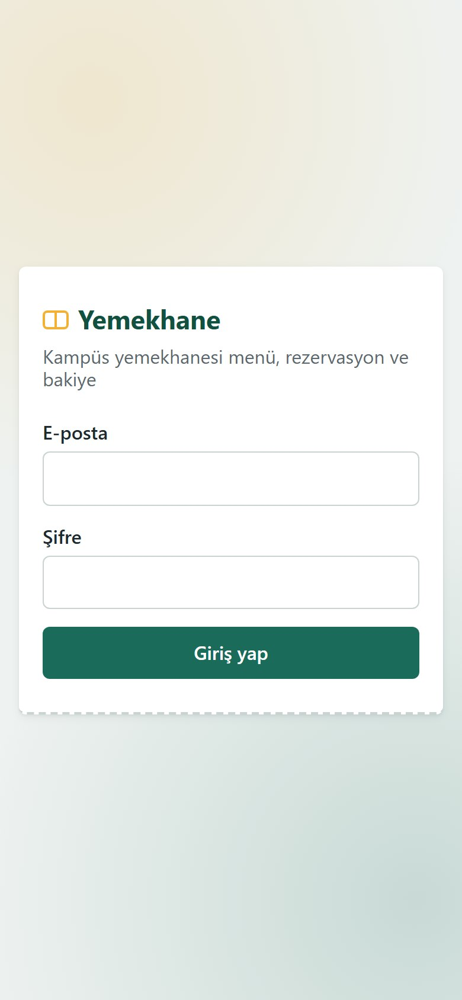
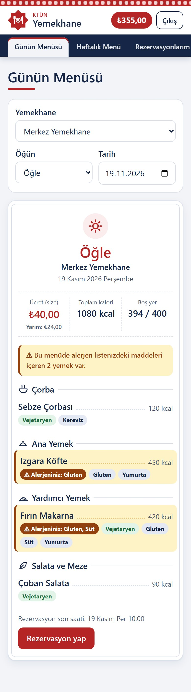
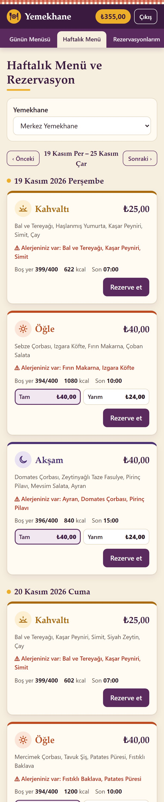
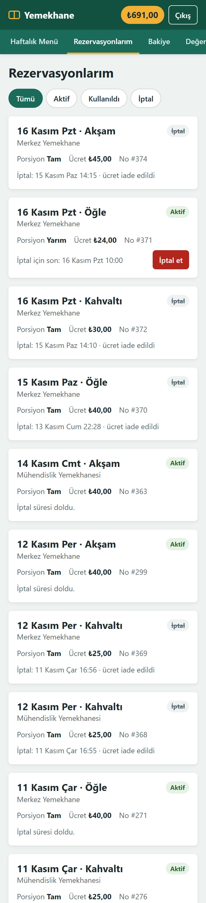
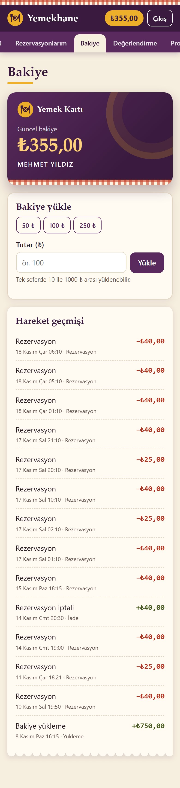
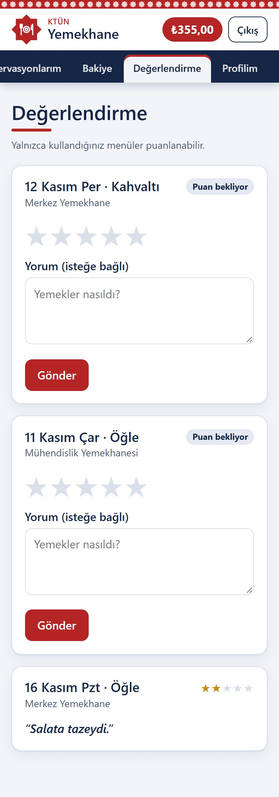
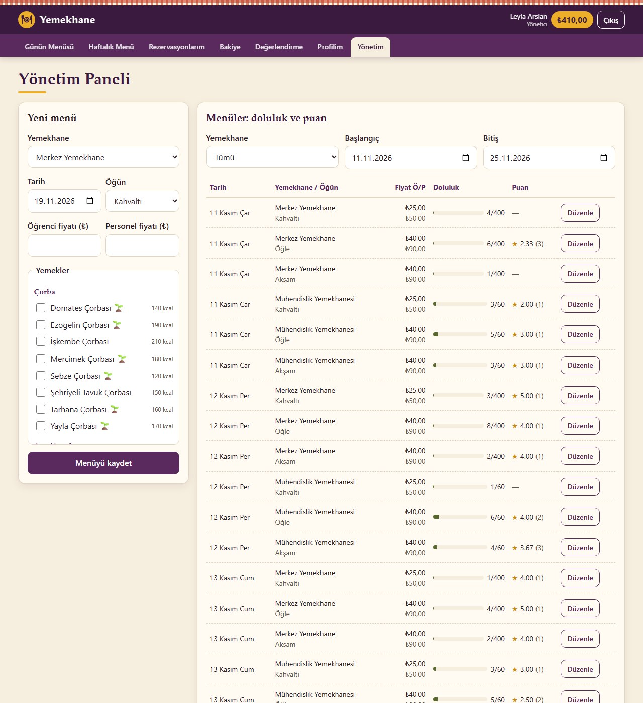
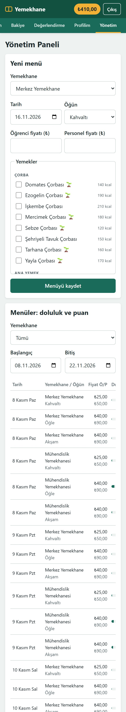
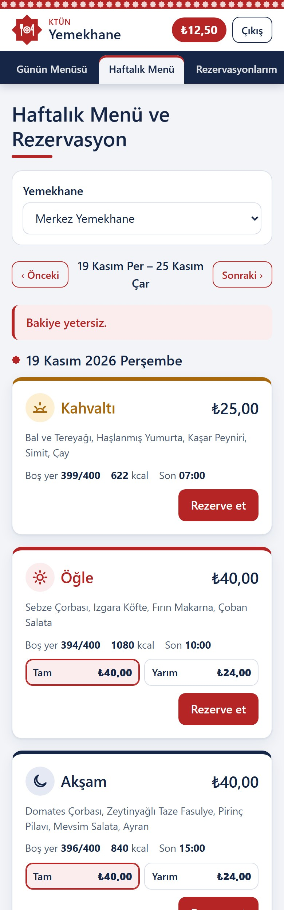
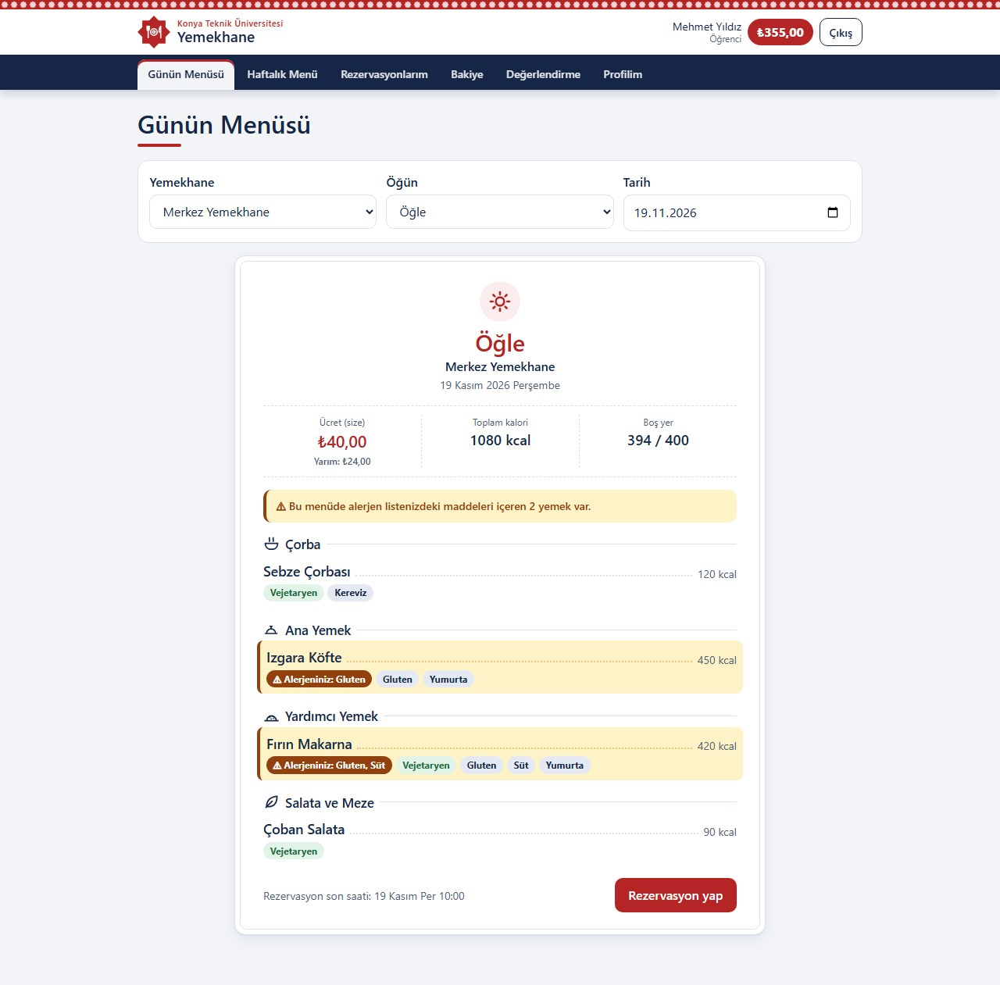
| Görev | Anahtar | Süre | Ne zaman silinir |
|---|---|---|---|
| Menü önbelleği | menu:{yemekhane_id}:{tarih}:{ogun_id} | Menünün gününün sonuna kadar (EXAT, İstanbul 23:59:59) | Yönetici menüyü değiştirince silinir ve kaynaktan yeniden yüklenir |
| Oturum | oturum:{token} | 30 dakika, her istekte GETEX ... EX 1800 ile yenilenir | Çıkışta DEL |
| # | Kontrol | Sonuç |
|---|---|---|
| 1 | Uygulama Redis'e bağlanıyor; sağlıkta "redis":"ok" | Geçti |
| 2 | Menü ilk istekte veritabanından, sonrakilerde Redis'ten | Geçti |
| 3 | Menü kaydı menünün günü bitince siliniyor | Geçti |
| 4 | Yönetici menüyü değiştirince eski kayıt siliniyor, arayüz yeni menüyü gösteriyor | Geçti |
| 5 | Uygulama container'ı yeniden başlasa da oturum düşmüyor | Geçti |
| 6 | Oturum süresi her istekte 30 dakikaya yenileniyor, çıkışta siliniyor | Geçti |
PS> docker compose logs -f uygulama [redis] redis:6379 bağlandı [önbellek] menu:1:2026-11-14:2 -> veritabanından geldi (replika) GET /api/menuler/gunluk?yemekhane_id=1&tarih=2026-11-14&ogun_id=2 -> 200 (6 ms) [önbellek] menu:1:2026-11-14:2 -> Redis'ten geldi GET /api/menuler/gunluk?yemekhane_id=1&tarih=2026-11-14&ogun_id=2 -> 200 (4 ms)
PS> docker compose exec redis redis-cli --scan --pattern 'menu:*'
menu:1:2026-11-14:2
PS> docker compose exec redis redis-cli GET menu:1:2026-11-14:2
{"menu_id":80,"tarih":"2026-11-14","yemekhane_id":1,"yemekhane":"Merkez Yemekhane","ogun_id":2,"ogun":"Öğle",
"ogrenci_fiyati":40,"personel_fiyati":90,"toplam_kalori":1180,"yemekler":[{"yemek":"Mercimek Çorbası",...}, ...]}
PS> docker compose exec redis redis-cli EXPIRETIME menu:1:2026-11-14:2
(integer) 1794689999 (2026-11-14 23:59:59 +03:00)
Önbellekte yalnızca gün içinde değişmeyen bilgi tutulur: yemekler, kalori, alerjenler ve fiyatlar. Boş yer sayısı ve kullanıcının kendi rezervasyonu her istekte veritabanından okunur, çünkü bunlar her rezervasyonda değişir.
[önbellek] menu:1:2026-11-15:2 -> Redis'ten geldi (önce: personel fiyatı 100) PUT /api/yonetim/menuler/85 (yönetici fiyatı 95 yaptı) [önbellek] menu:1:2026-11-15:2 silindi (vardı) [önbellek] menu:1:2026-11-15:2 -> veritabanından geldi (kaynak) PUT /api/yonetim/menuler/85 -> 200 (31 ms) [önbellek] menu:1:2026-11-15:2 -> Redis'ten geldi (sonra: personel fiyatı 95)
Güncellemeden sonra kayıt silinir ve menü kaynaktan yeniden yüklenir. Replikadan yüklenseydi, replika birkaç milisaniye geride kaldığında eski fiyat okunup gün sonuna kadar önbellekte kalabilirdi.
Önce: oturum uygulamanın belleğinde (Map)giriş yapıldı: Mehmet Yıldız
GET /api/oturum/ben -> 200
PS> docker compose restart uygulama
aynı çerezle:
GET /api/oturum/ben -> 401
Sonra: oturum Redis'tegiriş yapıldı: Mehmet Yıldız
GET /api/oturum/ben -> 200
PS> docker compose restart uygulama
aynı çerezle:
GET /api/oturum/ben -> 200, Mehmet Yıldız
> redis-cli GET oturum:14482ddc380e...
{"id":7,"ad":"Mehmet","soyad":"Yıldız","eposta":"mehmet.yildiz@ogr.kampus.edu.tr","rol":"ogrenci","sonYazma":0}
> redis-cli TTL oturum:14482ddc380e...
1799
(5 saniye bekleniyor)
> redis-cli TTL oturum:14482ddc380e...
1793
GET /api/oturum/ben gönderildi
> redis-cli TTL oturum:14482ddc380e...
1800
POST /api/oturum/cikis gönderildi
> redis-cli EXISTS oturum:14482ddc380e...
0
Oturumda şifre ya da bakiye tutulmaz. Kullanıcı 30 dakika hiç istek göndermezse kaydı Redis kendisi siler. Çerez HttpOnly ve SameSite=Strict olduğu için JavaScript tarafından okunamaz.
Yemekhane Müdürlüğü'nün iki isteği sistem çalışırken uygulandı. Yarım porsiyon: öğle ve akşamda seçilebilir, ücret tam fiyatın %60'ı, kahvaltıda yok, geçmiş rezervasyonlar tam sayılır. Alerjen uyarısı: kullanıcı profilinde alerjenlerini seçer, menüde bu alerjenleri içeren yemekler uyarıyla gösterilir.
db/init/04_degisiklik.sql| Değişiklik | Neden |
|---|---|
ogunler.yarim_porsiyon_orani DECIMAL(3,2) NULL (Öğle ve Akşam 0.60, Kahvaltı NULL) | "Kahvaltıda yarım yok" kuralı kodda değil veride durur. Oran değişirse kod değişmez. |
rezervasyonlar.porsiyon ENUM('tam','yarim') NOT NULL DEFAULT 'tam' | Varsayılan tam olduğu için eski satırların hepsi tam porsiyon sayılır. |
Yeni tablo kullanici_alerjenleri | Kullanıcı ile alerjen arasında çoka çok ilişki; kullanıcı silinirse kayıtları da silinir. |
v_menu_detay: ogrenci_yarim_fiyati, personel_yarim_fiyati | Arayüz yarım fiyatı rezervasyondan önce gösterebilsin; hesap veritabanında yapılır. |
sp_rezervasyon_yap(kullanici_id, menu_id, porsiyon) | Yarım ücreti hesaplar, kahvaltıda yarımı reddeder. İptal yordamı değişmedi: zaten kayıttaki ücreti iade ediyor. |
PS> cmd /c "docker compose exec -T mysql-primary mysql -uroot -pyemekhane_kok yemekhane < db\init\04_degisiklik.sql" PS> $LASTEXITCODE 0
PowerShell 5.1'de < yönlendirmesi olmadığı için cmd /c kullanıldı. Replikaya ayrıca hiçbir şey uygulanmadı.
PS> docker compose exec mysql-replica mysql -uroot -pyemekhane_kok yemekhane -e "SHOW CREATE TABLE rezervasyonlar\G"
`durum` enum('aktif','kullanildi','iptal') ... NOT NULL DEFAULT 'aktif',
`porsiyon` enum('tam','yarim') COLLATE utf8mb4_tr_0900_ai_ci NOT NULL DEFAULT 'tam',
`ucret` decimal(8,2) NOT NULL,
PS> ... -e "SHOW CREATE TABLE kullanici_alerjenleri\G"
CREATE TABLE `kullanici_alerjenleri` (
`kullanici_id` int unsigned NOT NULL,
`alerjen_id` tinyint unsigned NOT NULL,
PRIMARY KEY (`kullanici_id`,`alerjen_id`),
CONSTRAINT `fk_ka_alerjen` FOREIGN KEY (`alerjen_id`) REFERENCES `alerjenler` (`id`),
CONSTRAINT `fk_ka_kullanici` FOREIGN KEY (`kullanici_id`) REFERENCES `kullanicilar` (`id`) ON DELETE CASCADE
)
PS> ... -e "SHOW CREATE TABLE ogunler\G"
`yarim_porsiyon_orani` decimal(3,2) DEFAULT NULL,
CONSTRAINT `ck_ogun_yarim_oran` CHECK (((`yarim_porsiyon_orani` is null) or ((`yarim_porsiyon_orani` > 0) and (`yarim_porsiyon_orani` < 1))))
PS> ... -e "SHOW REPLICA STATUS\G"
Replica_IO_Running: Yes
Replica_SQL_Running: Yes
Seconds_Behind_Source: 0
Last_SQL_Error:
Migration'dan önce replikadaki rezervasyonlar tablosunda porsiyon sütunu, kullanici_alerjenleri tablosu ise hiç yoktu.
Migration'dan önce ve sonra kaynakta aynı özetrezervasyon_sayisi toplam_ucret aktif kullanildi iptal kullanici_sayisi toplam_bakiye bakiyesi_hareketlerle_uyusmayan
370 16340.00 156 167 47 30 10097.50 0
(replika) SELECT porsiyon, COUNT(*) FROM rezervasyonlar GROUP BY porsiyon
tam 370
04_degisiklik.sql kaynağa uygulanır; replikaya kendisi geçer.docker compose up -d --build uygulama.Temizlikten önce önbellekteki kayıtta yarım fiyat alanları yok> redis-cli GET menu:1:2026-11-15:2
{"menu_id":85,"tarih":"2026-11-15",...,"ogrenci_fiyati":40,"personel_fiyati":95,...}
GET /api/menuler/gunluk (15 Kasım, Öğle) -> porsiyonlar: Tam porsiyon 40 TL
Yalnızca menu:* anahtarları silinir, oturumlara dokunulmazPS> docker compose exec redis sh -c "redis-cli --scan --pattern 'menu:*' | xargs -r redis-cli DEL"
(integer) 1
PS> docker compose exec redis redis-cli --scan --pattern 'menu:*'
(boş)
GET /api/menuler/gunluk (15 Kasım, Öğle) -> porsiyonlar: Tam porsiyon 40 TL | Yarım porsiyon 24 TL
[önbellek] menu:1:2026-11-15:2 -> veritabanından geldi (replika)
KEYS yerine SCAN kullanıldı; KEYS büyük bir Redis'te sunucuyu bir süre kilitleyebilir.
öğrenci kahvaltı yarım -> 400 Bu öğünde yarım porsiyon yoktur. öğrenci öğle 'ceyrek' -> 400 Geçersiz porsiyon seçimi. öğrenci öğle yarım -> 201 porsiyon=yarim ucret=24 bakiye=691 öğrenci kahvaltı (porsiyon yok) -> 201 porsiyon=tam ucret=30 bakiye=661 hareket: Rezervasyon (yarım porsiyon) -24 öğle yarım iptal -> 200 iade=24 bakiye=685 personel akşam yarım (100 × 0,60) -> 201 ucret=60
Gluten(1) ve Süt(7) kaydet -> 200 Alerjenleriniz kaydedildi. [1,7] olmayan alerjen 99 -> 400 Geçersiz alerjen seçimi. günlük 16 Kasım Öğle -> alerjen_uyarisi: 3 Izgara Köfte: alerjenler [Gluten, Yumurta] -> uyarı [Gluten] Su Böreği: alerjenler [Gluten, Süt, Yumurta] -> uyarı [Gluten, Süt] Ayran: alerjenler [Süt] -> uyarı [Süt] boş liste kaydet -> 200 Alerjen listeniz temizlendi.
Menü Redis'te herkes için aynı tutulur. Kullanıcıya özel uyarı her istekte sunucuda hesaplanır (menuServisi.alerjenUyarilari), böylece önbellek kullanıcıya göre bölünmez.
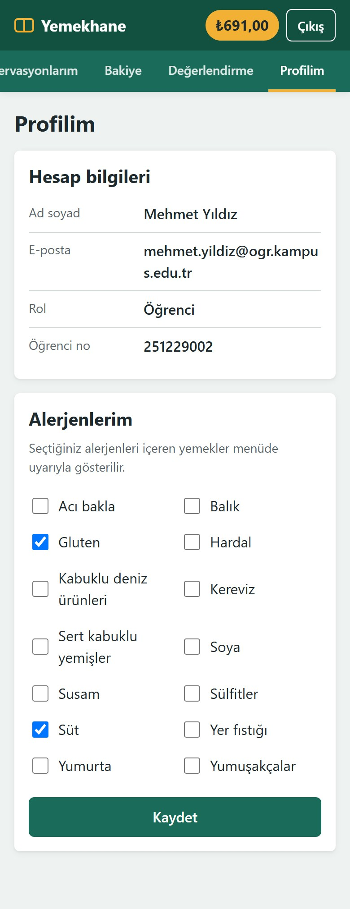
PS> docker compose -p yemekhanetest up -d --build [Entrypoint]: running /docker-entrypoint-initdb.d/01_sema.sql [Entrypoint]: running /docker-entrypoint-initdb.d/02_ornek_veri.sql [Entrypoint]: running /docker-entrypoint-initdb.d/04_degisiklik.sql [replica-setup] Replikasyon çalışıyor (IO=Yes, SQL=Yes). Replika salt okunur. (replika) SELECT id, ad, yarim_porsiyon_orani FROM ogunler 1 Kahvaltı NULL 2 Öğle 0.60 3 Akşam 0.60 yarım rezervasyon -> porsiyon=yarim ucret=24 PS> docker compose -p yemekhanetest down -v
Depoyu yeni indiren biri ek bir adım yapmadan docker compose up -d ile Aşama 4 dahil tüm sistemi alır. Deneme ayrı bir proje adıyla (-p yemekhanetest) yapıldı, ana sistemin verisine dokunulmadı.